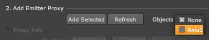

Particular 3D Gizmo
When you launch Nuke, the Trapcode Menu in the toolbar has two options. Particular v2 is the standard 2D node. Particular 3D Gizmo is a group set up to operate Particular in Nuke's 3D space.
This page discusses the difference between the Particular plug-in and Particular Gizmo. We have included a simple step-by-step tutorial for using the Gizmo in a 3D scene. Go here to read about each control in the Gizmo Setup tab.
The Particular v2 plug-in
This screenshot shows the Particular v2 plug-in. Connect the plug-in to your Viewer and you're good to go.
Most of the time, you will choose Particular within the Gizmo. However, we have left the plug-in exposed for a few reasons. You may want to use the plug-in without the Gizmo to create something simple or using the background, or if you aren't using Nuke's 3D space for 3D work. You might also want to make your own 3D wrapper.
The Particular 3D Gizmo
This screenshot shows the Particular 3D Gizmo. The Gizmo is a group of nodes and scripts that let Particular interact with Nuke's 3D environment. The Particular3DGizmo Setup tab controls this interaction.
Without the Gizmo, Particular acts like a flat node with particles on it. With the Gizmo as a 3D wrapper, Particular is projected onto a 3D card that is functional in Nuke's 3D space. You won't see any Viewer output from the Gizmo, however, until a camera is set up in Nuke. Most likely, you already have a 3D scene with a camera fired up and ready for Particular.
Tutorial: Using the Gizmo with a 3D scene
To use the Particular 3D Gizmo, you need a 3D scene setup. Let's go through this process together. By the way, we discuss the nodes and expressions in a Particular 3D scene on this 3D Nuke page.
Step 1- Your basic 3D scene should consist of a Scene node with a Camera and an Axis node attached, all piped into a ScanlineRender node. This is the scene into which you will bring the Particular 3D Gizmo.
Step 2- Add our group node called Particular3DGizmo along with its attached Emitters node to the scene. Connect the output of the Particular3DGizmo to the Scene1 node. Connect the input of the Emitters node to the Axis node.
Step 3- In the Properties of the Gizmo, move to the Setup tab. Click the Get Cameras button. This will populate the camera list with all the cameras in the scene. In this example, Camera1 is all that appears. Select Camera1 from the Camera dropdown list.
Step 4- Click Refresh under the Add Emitter Proxy group. This will refresh the Objects list with all the Axis nodes (or other nodes with translate properties) connected to the Emitters node. Now, select Axis1 from the dropdown list. If you enter 3D mode in Nuke, you can control the emitter of Particular and the camera of Particular with the Axis1 and Camera1 nodes, respectively.

Step 5- As you can see, the output of Particular is actually projected onto a card in 3D space.
Step 6- You can
automatically attach the card to the location of the Emitter, or lock it to the Camera, using the Card
Properties dropdown list. When working in a scene that has a lot of camera movement, locking to the Camera will probably give
you a better result. The card will move along with the camera as it moves, and therefore the particles will
always be projected on it.
Locking to the Emitter works well when the Camera is more stationary, and you have more things passing between the camera and the particles. They will be obscured because the objects in Nuke’s 3D space will be between the card the particles are projected on and the camera. The Trans Offset lets you offset the card. For instance, if you lock the card to the emitter but need it to travel with the camera.